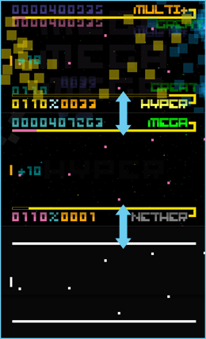
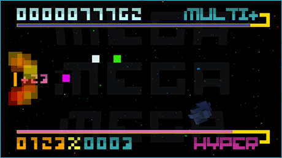

10 |
Le déroulement du jeu |
 |
MODES Dans BIT.TRIP BEAT, le nombre de vies est illimité... à condition d'apprendre à naviguer parmi les trois modes.
 Les joueurs expérimentés gagnent des scores plus élevés et ont moins de fins de partie en restant toujours dans le mode ultime.
Le jeu démarre en mode Hyper. De là, repoussez les Beats pour remplir le mégamètre et passer au mode supérieur. Une fois en mode Méga, remplissez le mégamètre pour augmenter le multiplicateur de scores.
Les Beats ratés remplissent le bas-mètre et peuvent vous faire tomber en mode Bas où l'on ne gagne aucun point. C'est votre dernière chance pour éviter la fin de la partie.
De là, soit vous passez au mode supérieur et retournez au cœur de l'action, soit vous passez au mode inférieur et la partie est terminée.
TRANSITIONS Pour découvrir toute l'histoire et la bande sonore, il faut faire preuve d'une forte concentration et d'une grande dextérité.

Collectionnez tous les Beats de transition en une formation pour ajouter une autre couche à la bande sonore du jeu et progresser dans l'histoire racontée par une imagerie d'arrière-plan.
Si vous ratez un seul Beat de transition dans une formation, vous gardez la bande sonore actuelle et retournez à l'imagerie d'arrière-plan qui vient d'être jouée. |
 |
 |
 |